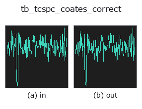

typed op• 数据种类:counts → counts
• 调用:fullseye.apply(img, "tb_tcspc_coates_correct", a=0.5, b=0.5)(2-D 的模型是一张图 + 两个标量旋钮 a,b∈[0,1])

*图为在 128×128 合成输入上实际运行的输出。左为输入，右为输出。点云以俯视散点显示(亮度 = z)，一维序列为折线，体数据为沿 z 的最大值投影，视频为中间帧，复数图像为幅值；无法成像的返回值直接显示数值。*
*旋钮 a 不改变输出(实测: 0.1 / 0.5 / 0.9 相同)。*
*旋钮 b 不改变输出(实测: 0.1 / 0.5 / 0.9 相同)。*
阶段(前置算子 → 本算子，从左到右):
▸ tb_tcspc_coates_correct: stages (docs site)
换别的图像(合成场景 / 照片 / 硬币。上排为输入，下排为对应输出。旋钮取默认):
▸ tb_tcspc_coates_correct: other inputs (docs site)
精确消除 TCSPC 堆积效应（Coates 估计量）——早到光子偏差。
> 以下的详细说明为原文 —— 摘要与标题已翻译。
Classical TCSPC records at most one photon per excitation cycle: the
first one. Late bins are therefore starved, because the cycles in which an
early photon arrived never reach them, and the measured histogram is biased
toward short arrival times — a dToF depth read straight off a piled-up
histogram is *too close*, and a fluorescence lifetime is *too short*.
Coates's estimator inverts that exactly. With `N_k` the measured counts in
bin `k and C` the number of excitation cycles, the number of cycles that
survived to reach bin `k is D_k = C - sum_{j<k} N_j`, the per-cycle
detection probability in that bin is `p_k = N_k / D_k` and the pile-up-free
per-cycle intensity is `lambda_k = -ln(1 - p_k)`. This op returns
`C * lambda_k` — the histogram the same scene would have produced if the
detector could record every photon — so it is directly comparable to the
measured one.
This is an exact inverse, not a linearisation: build a histogram from a
known `lambda through the forward model `N_k = C * exp(-sum_{j<k}
lambda_j) * (1 - exp(-lambda_k))` and Coates returns lambda` to machine
precision (measured max relative error 1.6e-15 in the tests, on a pile-up so
severe that the last bin was suppressed to 14.8% of its true counts).
*hist* is the 1-D measured histogram (counts per bin); *cycles* the number of
excitation cycles (laser pulses) that produced it.
Raises `ValueError`: negative, non-finite or non-1-D *hist*, a
non-positive or non-integer *cycles*, a histogram whose total exceeds
*cycles* (impossible: at most one photon per cycle — a sure sign that
*cycles* is wrong or the data are not first-photon TCSPC), and any bin that
consumed every remaining cycle (`p_k = 1, where -ln(0) is inf`).
Typed bridge of the photon op `tcspc_coates_correct into the 2-D evolution registry: the same implementation, called under the op(v, a, b) convention. This op has no tunable parameter; a and b` are unused.
• 示例数据目录(下载 URL / 许可证) —— 2-D 用 skimage.data(BSD/公有领域)加合成图,3-D 给出真实数据源(Stanford/PDS 等)的下载 URL。
• 算子来历与参考文献 —— 该算子族所依据的研究/方法出处。
下面的程序已确认可以运行(与图相同的输入)。在 Studio 帮助中，此块会变成按钮，可当场加载并运行。
img_to_counts 0.50 0.50 tb_tcspc_coates_correct 0.50 0.50
▸ Load this pipeline · Load & run
下面的示例调用的是底层账本算子 tcspc_coates_correct。此桥接算子只是把同一实现适配为 fn(v, a, b) 约定，行为完全相同(只是调用形式不同)。
• photon_timeresolved — py -3.11 examples/photon_timeresolved.py
• poc_dtof_ranging — py -3.11 examples/poc_dtof_ranging.py
counts 作为输入)identity · tb_spad_deadtime_apply · tb_spad_deadtime_correct · tb_tcspc_irf_convolve · tb_tcspc_background_subtract · tb_dtof_depth · tb_countrate_to_counts · tb_counts_to_countrate
typed)tb_points_to_voxel · tb_estimate_point_normals · tb_iss_keypoints · tb_project_points · tb_render_point_depth · tb_statistical_outlier_removal · tb_radius_outlier_removal · tb_voxel_grid_downsample
*Provenance: ops.py — 2D 算子登记表。本条目由 tools/opdocs.py md 自动生成(请勿手工编辑)。*
© 2026 Kazufumi Furuse — Fullseye operator documentation. Licensed under Apache-2.0.
{kind=link}
{kind=link}